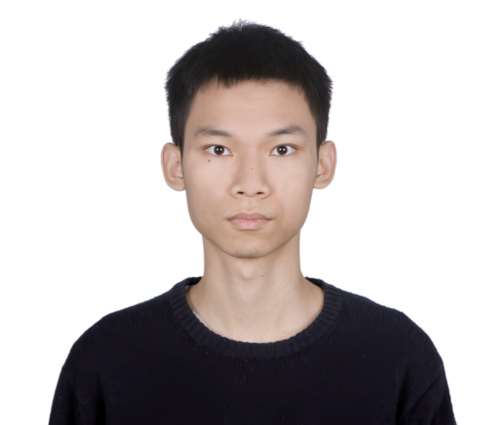

Tianpei Gu 「顾天培」

Email: gutianpei@ucla.edu
Github: https://github.com/Gutianpei
LinkedIn: https://www.linkedin.com/in/tianpei-gu-973904129/


About Me
I'm a first year Master student at UCLA, working closely with Prof. Bolei Zhou. I did research at Intelligent Vision Group (IVG), Tsinghua University, under the guidance of Prof. Jiwen Lu and Dr. Guangyi Chen. I also worked at SenseTime Research as an intern. In December 2020, I received B.S. degree in Computer Science and Mathematics at the University of Maryland. My research interest is in Computer Vision, especially Generative Models and other interesting problems.
Education
University of California, Los Angeles, CA, USA
- Master of Engineering, Expected: December 2022
- TA for computer vision course
University of Maryland at College Park, MD, USA
- Bachelor of Science in Computer Science
- Bachelor of Science in Mathematics
Publications
Tianpei Gu*, Guangyi Chen*, Junlong Li, Chunze Lin, Yongming Rao, Jie Zhou, Jiwen Lu
IEEE/CVF Conference on Computer Vision and Patter Recognition (CVPR), 2022

Li Siyao, Wenjiang Yu, Tianpei Gu, Chunze Lin, QUan Wang, Chen Qian, Chen Change Loy, Ziwen Liu
IEEE/CVF Conference on Computer Vision and Patter Recognition (CVPR), 2022

Guangyi Chen, Tianpei Gu, Jiwen Lu, Jin-An Bao, and Jie Zhou
IEEE Transactions on Image Processing (TIP), 2021

We propose attention pyramid networks by the "split-attend-merge-stack" principle to jointly learn the attentions under different scales and obtain superior performance on many person re-identification datasets.
Field Experience
SenseTime Research
Computer Vision Research Intern- Build an end-to-end image generation pipeline with StyleGAN to produce massive high-quality stylized image with model blending.
- Main contributor of the product which transferring human face image into multiple style (now 10+).
- Develop a pipeline of “Inversion-Editing-Stylization” for human face, which the editing part can receive a certain attribute selection or a text prompt.
- Assisted to implement the project of music to dance generation
Beijing Photon Dance Tech Inc.
Co-Founder, Algorithm Engineer- Founded in Skywork Team, Tsinghua University.
- Proposed an end-to-end solution from extracted 3D point cloud with multiple views to automatic motion difference evaluating. Participated in multi-view point cloud calibration and developing of DL-based merging algorithm.
- Our team just receive the Pre-A Investment.
Professional Skills
Programming Language (ranked by proficiency): Python, Java, C, C++, Matlab, Git, Shell
Deep Learning Framework: Keras, PyTorch, TensorFlow